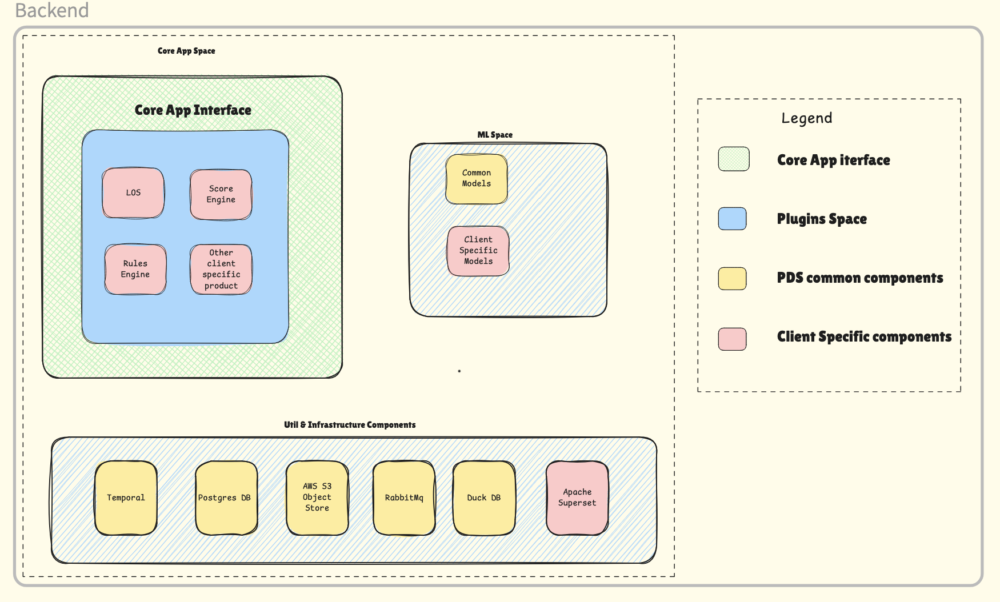

Introduction to Metis Platform
This document introduces the high-level architecture of our SAAS platform, which we've internally named Metis. The platform helps financial institutions streamline operations through intelligent automation, machine learning, and configurable business processes.
We'll define components in logical space context to help visualize future development and understand our product design and pluggable interface. The grouping may or may not indicate the exact architecture and deployment plan, but helps understand the motivation behind our product design.

🏗️ Platform Architecture
The Metis platform is organized into three logical spaces:
┌─────────────────────────────────────────────────────────────────┐
│ METIS PLATFORM │
├─────────────────────────────────────────────────────────────────┤
│ 🎯 CORE APP SPACE │
│ ├─ Core App Interface (Single Entry Point) │
│ ├─ LOS (Loan Origination System) │
│ ├─ Rules Engine │
│ ├─ Fraud Score Engine │
│ └─ Client-Specific Plugins │
├─────────────────────────────────────────────────────────────────┤
│ 🧠 ML SPACE │
│ ├─ Common Models (OCR, Classification) │
│ ├─ Client-Specific Models (Risk, Fraud) │
│ └─ Model Registry & Versioning │
├─────────────────────────────────────────────────────────────────┤
│ 🛠️ UTIL & INFRASTRUCTURE COMPONENTS │
│ ├─ Temporal (Workflow Orchestration) │
│ ├─ PostgreSQL (Primary Database) │
│ ├─ S3 (Object Storage) │
│ ├─ RabbitMQ (Message Queue) │
│ ├─ DuckDB (Analytics Database) │
│ └─ Apache Superset (Dashboards) │
└─────────────────────────────────────────────────────────────────┘
🎯 Core App Space
All components within this are client specific plugins. The Core App Interface is how any UI/User/etc communicates with core app space.
Core App Interface
- Single entry point for all external communication
- Installs different plugins based on client needs
- Example: Some clients need LOS + Rules Engine + Fraud Score Engine (all three can be independently wired up)
- As new clients come up with new features, we select plugins (or build new plugins) and tie them together
Key Plugins
LOS (Loan Origination System) - Complete loan application lifecycle management - Document collection and verification - Integration with external bureaus
Rules Engine - Client-specific business logic without code changes - Configurable rules through configuration - Real-time rule evaluation
Fraud Score Engine - Advanced fraud detection combining rule-based and ML approaches - Document verification and identity checks - ML-based fraud probability scoring
🧠 ML Space
These are the underlying models and preprocessors for data that needs to be transformed via ML models. Components in this layer are triggered by core app space. The segregation allows developing both spaces independently and expose the core space to outside world.
Two Types of Components:
1. Common Models
OCR Engine - Input: Image → Output: Well structured data - Supports: PAN Cards, Aadhaar, Bank Statements, Salary Slips, ITR Documents
Document Classification - Automatically identifies document types from uploaded images - Determines appropriate processing pipeline
2. Client Specific Models
Risk Assessment Models - Client-specific risk models trained on their historical data - Example: Client specific risk models for probability of default
🛠️ Util & Infrastructure Components
All components are either helper servers or cloud resources. Core app interface talks to this layer for authentication, log ingestion, monitoring data sampling, queue management, DB storage etc.
Component Definitions:
Temporal - Workflow orchestration tool - Widely used to define client specific business use cases and processes - Handles complex business workflows with reliability
PostgreSQL - Our main DB - Relational DB but also good with JSON querying - Extension capabilities like direct geo queries, vector DB extension etc - Multi-tenant support with row-level security
S3 - AWS cloud object store with lots of uses - Primary usage: Store images, files, etc as objects - Logs, events generated throughout our process stored here - Can be queried later for aggregate business analytics, alerting, model storage
RabbitMQ - Queue of our choice for all asynchronous activities - Pushing events (for near real time ingestion) - Async processing result mapping - Can be reused for high volume, low ticket size clients
DuckDB - Columnar embedded Database (uses server resources to compute) - All aggregate queries can be put here - Scales very well at lower volumes - Combines data in disk + archived S3 data to analyze things
Apache Superset - Client specific dashboards to visualize query results from DuckDB/Postgres/any DB - Can add custom views with minor tweaks to open source solution
🔄 Sample Scenario
Client A has signed up for LOS + Rules Engine (includes models). Here's the bureau pull and underwriting flow:
🎯 Platform Benefits
The combination of these components allows us to add new features (or plugin products) in any combination. These plugins can be sold to our clients based on their specific needs.
Key Advantages: - Modular: Mix and match components based on client requirements - Scalable: Each component scales independently - Customizable: Client-specific models and rules - Rapid Deployment: Quick client onboarding